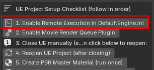

BlendReal® - Pipeline UE5
Automated Blender → Unreal Engine 5 Cinematic Pipeline - 13 Steps. 3 Integrated Systems. 1 Complete Pipeline.
📌 BlendReal® biến quy trình Blender → Unreal Engine 5 thành một workflow có hướng dẫn từng bước, giúp bạn đi từ Blender Scene đến Unreal Engine Scene sẵn sàng cho cinematic render mà không cần phải thành thạo các thiết lập kỹ thuật phức tạp trong Unreal Engine.
📌 13-Step Guided Workflow — BlendReal® hướng dẫn bạn từng bước từ thiết lập Remote Execution, Movie Render Queue, tạo PBR/Glass Master Material, thiết lập Master Sequence, export mesh & animation, cấu hình Camera, FPS, Draw Distance, Two Sided cho đến export và setup VDB. Bạn không cần phải tự nhớ hàng loạt thiết lập hoặc tìm kiếm từng bước trong UE.
📌 Không chỉ là một công cụ Export. BlendReal® là một pipeline gồm 3 hệ thống được tích hợp và giao tiếp với nhau: Blender → Unreal Pipeline + UDS — Cinematic Sky & Lighting + VDB — Cinematic Volume.
📌 Từ một Sidebar (N-panel) trong Blender, BlendReal® tự động hóa những công việc thường phải thực hiện thủ công trong UE: FBX, Camera, Animation, Materials, Sequencer, Sky, Lighting, VDB và Movie Render Queue.
📌 Không cần phải là Unreal Engine expert. Nếu bạn đã có kỹ năng Blender và chỉ biết những thao tác cơ bản trong Unreal Engine, BlendReal® cung cấp một quy trình rõ ràng để bạn từng bước đưa scene vào UE và thiết lập cinematic render.
📌 Với người dùng Unreal Engine có kinh nghiệm, BlendReal® giúp loại bỏ các thao tác lặp lại, batch processing và setup thủ công — đặc biệt hữu ích cho những cảnh Wide Shot / Extreme Wide Shot với nhiều mesh, camera, animation, lighting và VDB.
📌 13 Steps. 3 Integrated Systems. 1 Complete Blender → Unreal Pipeline.
📌 From Blender Scene to Cinematic Render — Without the Complex Setup.
✨ What's new?
V1.0.1
🔷 BlendReal — Pipeline Chính
- Export hàng loạt FBX kèm Animation qua Sequencer hoặc FBX tĩnh, tự động áp Nanite Settings khi import (Enable Nanite Support, Explicit Tangents, Lerp UVs, Shape Preservation = Preserve Area, Preserve Area for Opacity) và Apply Two Sided, chỉ 1 click — kèm PBR Texture đầy đủ (Base Color, Metallic, Roughness, Normal, Specular, Emission, Alpha, Ambient Occlusion)
- Tạo Camera với Track To Constraint chỉ 1 click, tự động bake Camera + Animation trước khi export — có thể Restore Baked Constraint để chỉnh lại chuyển động camera bất cứ lúc nào
- Đồng bộ hoá Camera giữa Blender và UE
- Bake animation cho mesh có gắn Constraint (Track To, Follow Path, Damped Track...) chỉ 1 click, có thể Restore lại animation gốc
- Tự tạo sẵn PBR Master Material và Glass Master Material, dùng ngay trong UE
- Tuỳ chọn áp trực tiếp vào UE project qua Remote Execution — bỏ qua bước import thủ công
- Có hướng dẫn thiết lập sẵn để kết nối project Blender với thư mục UE project
- Đổi tên Mesh hàng loạt, tự phân loại theo Island/Building/Landscape kèm số thứ tự, chỉ 1 click
- Apply Rotation hàng loạt (giữ nguyên Location + Scale)
- Apply Scale hàng loạt (giữ nguyên Location + Rotation)
- Recalculate Normals theo từng UV Island (radial outward) hàng loạt — chính xác hơn Recalculate Normals thông thường
- Tự động tạo Sequencer cho các actor có animation
- Quản lý Mesh, Camera, VDB gọn gàng trong Outliner UE
- 1-click batch-set: Filmback/Sensor (16:9 hoặc 9:16), Focal Length cho toàn bộ CineCameraActor, FPS Master Sequence, Max Draw Distance (kèm Force Always Loaded chống World Partition culling khi render), Motion Blur, Exposure, độ sáng Emissive cho MNEMO Window Glow
🔷 UDS — Điều Khiển Ultra Dynamic Sky
- 13 preset bầu trời dựng sẵn theo phong cách điện ảnh (Golden Hour, Overcast, Night, Blue Moon, Dust Storm...) — chọn thẳng 1 mood có sẵn
- Cinematic Setup đầy đủ: nhiệt độ màu ánh sáng, cường độ, tán xạ volumetric, khoảng đổ bóng, mật độ + độ tắt dần của sương mù
- Đồng bộ giữa Ultra Dynamic Sky và Directional Light của Blender — màu/góc xoay ánh sáng cập nhật realtime
- Lưu/tải/backup preset riêng của bạn
- Xuất thông số bầu trời sang UE project dạng JSON, hoặc Import ngược lại từ UE sang Blender, hoặc áp trực tiếp qua Remote Execution
🔷 VDB — Pipeline Volume
- Quy trình 3 bước: Load VDB vào Blender → Send VDB Files sang UE Project (copy frame + ghi kèm transform manifest) → Place VDB in UE Scene qua Remote Execution — tự convert sang SVT (Sparse Volume Texture), tạo Material Instance, spawn Heterogeneous Volume actor, gán Material/Animation/Transform tự động
- Hỗ trợ cả VDB dạng chuỗi animation đầy đủ và 1 frame tĩnh
- VDB Fill Light — Directional Light riêng chuyên chiếu sáng VDB, cường độ tự nội suy theo đường cong Ngày/Đêm bám Time of Day của Ultra Dynamic Sky (hoặc override thủ công)
- VDB Shadow Light — Directional Light riêng đổ bóng VDB xuống mặt đất, không xung đột với bóng Sun/Moon của UDS
- Point Light bám theo VDB, đồng bộ 2 chiều thật với UE — đọc animation Intensity/Location trực tiếp từ UE Sequencer về Blender
- Apply Flicker to Light — hiệu ứng nhấp nháy lửa/nổ bằng Noise Modifier (Scale/Strength/Depth) kết hợp Auto-ramp không đều (lên nhanh, tắt chậm)
- 3 preset vật liệu: 🔥 Fire / 💨 Smoke / ☁️ Cloud — tham số Density/Albedo/Blackbody/Temperature (Kelvin) tinh chỉnh theo chuẩn vật lý màu lửa thật
- Cinematic Setup — dialog thiết lập nhanh cho Console Variables (chất lượng render Heterogeneous Volumes), DirectionalLight, Material VDB, ExponentialHeightFog — tự cảnh báo nếu xung đột với hệ Sky/Fog của UDS
- Diagnose Sequencer Bindings (chỉ đọc) + Clean Orphaned Bindings — dọn dữ liệu rác nếu UE crash giữa lúc Place VDB
- Lưu/tải/xoá preset riêng cho Cinematic Setup, Material, Point Light
💻 Yêu cầu hệ thống
- Hệ điều hành Windows 10/11 64-bit
- Blender: 4.5, 5.0, hoặc 5.2 (LTS).
- Project Unreal Engine 5.6+, 5.7+, 5.8+ tuy nhiên UE5.6, 5.7 chế độ shadow của VDB hoạt động không chính xác và có thể mất shadow, UE5.8+ hoạt động tốt với shadow của cả VDB tĩnh và sequence
- Các tính năng Remote Execution (áp trực tiếp material/sky/camera vào UE) cần bật Python Remote Execution trong project UE (
Edit > Project Settings > Plugins > Python) — addon có sẵn nút hướng dẫn thiết lập mà không cần thảo tác thủ công.
🛠️ Cài đặt (Installation)
- Trong Blender, vào Edit > Preferences > Add-ons
- Bấm Install from Disk..., chọn file
.zipđã tải- Tick vào ô bên cạnh BlendReal® - Pipeline UE5 trong danh sách Add-ons để bật addon
- Mở Sidebar trong 3D Viewport (phím
N), tìm tab BlendReal®Nếu Blender báo addon không tương thích, kiểm tra lại đúng bản Blender đang cài có nằm trong danh sách hỗ trợ ở mục Yêu cầu hệ thống không.


🔄 Cập nhật lên bản mới
Nếu cài đặt lần đầu (Preferences > Add-ons, mở rộng BlendReal®, bấm Remove), sau đó cài
.zipmới như hướng dẫn trên rồi khởi động lại Blender. Trước khi cài bản mới, gỡ bản cũ trước (Preferences > Add-ons, mở rộng BlendReal®, bấm Remove), sau đó cài.zipmới như hướng dẫn trên rồi khởi động lại Blender. Trước khi cập nhật, bạn nên sao lưu các Preset và cấu hình cá nhân. Sau đó, gỡ phiên bản hiện tại của addon và cài đặt phiên bản mới nhất từ trang sản phẩm
⚙️ Tính năng — 3 công cụ, 1 tab Sidebar
🔷 BlendReal — Pipeline Chính
- Export hàng loạt FBX kèm Animation qua Sequencer hoặc FBX tĩnh, tự động áp Nanite Settings khi import (Enable Nanite Support, Explicit Tangents, Lerp UVs, Shape Preservation = Preserve Area, Preserve Area for Opacity) và Apply Two Sided, chỉ 1 click — kèm PBR Texture đầy đủ (Base Color, Metallic, Roughness, Normal, Specular, Emission, Alpha, Ambient Occlusion)
- Tạo Camera với Track To Constraint chỉ 1 click, tự động bake Camera + Animation trước khi export — có thể Restore Baked Constraint để chỉnh lại chuyển động camera bất cứ lúc nào
- Đồng bộ hoá Camera giữa Blender và UE
- Bake animation cho mesh có gắn Constraint (Track To, Follow Path, Damped Track...) chỉ 1 click, có thể Restore lại animation gốc
- Tự tạo sẵn PBR Master Material và Glass Master Material, dùng ngay trong UE
- Tuỳ chọn áp trực tiếp vào UE project qua Remote Execution — bỏ qua bước import thủ công
- Có hướng dẫn thiết lập sẵn để kết nối project Blender với thư mục UE project
- Đổi tên Mesh hàng loạt, tự phân loại theo Island/Building/Landscape kèm số thứ tự, chỉ 1 click
- Apply Rotation hàng loạt (giữ nguyên Location + Scale)
- Apply Scale hàng loạt (giữ nguyên Location + Rotation)
- Recalculate Normals theo từng UV Island (radial outward) hàng loạt — chính xác hơn Recalculate Normals thông thường
- Tự động tạo Sequencer cho các actor có animation
- Quản lý Mesh, Camera, VDB gọn gàng trong Outliner UE
- 1-click batch-set: Filmback/Sensor (16:9 hoặc 9:16), Focal Length cho toàn bộ CineCameraActor, FPS Master Sequence, Max Draw Distance (kèm Force Always Loaded chống World Partition culling khi render), Motion Blur, Exposure, độ sáng Emissive cho MNEMO Window Glow
🔷 UDS — Điều Khiển Ultra Dynamic Sky
- 13 preset bầu trời dựng sẵn theo phong cách điện ảnh (Golden Hour, Overcast, Night, Blue Moon, Dust Storm...) — chọn thẳng 1 mood có sẵn
- Cinematic Setup đầy đủ: nhiệt độ màu ánh sáng, cường độ, tán xạ volumetric, khoảng đổ bóng, mật độ + độ tắt dần của sương mù
- Đồng bộ giữa Ultra Dynamic Sky và Directional Light của Blender — màu/góc xoay ánh sáng cập nhật realtime
- Lưu/tải/backup preset riêng của bạn
- Xuất thông số bầu trời sang UE project dạng JSON, hoặc Import ngược lại từ UE sang Blender, hoặc áp trực tiếp qua Remote Execution
🔷 VDB — Pipeline Volume
- Quy trình 3 bước: Load VDB vào Blender → Send VDB Files sang UE Project (copy frame + ghi kèm transform manifest) → Place VDB in UE Scene qua Remote Execution — tự convert sang SVT (Sparse Volume Texture), tạo Material Instance, spawn Heterogeneous Volume actor, gán Material/Animation/Transform tự động
- Hỗ trợ cả VDB dạng chuỗi animation đầy đủ và 1 frame tĩnh
- VDB Fill Light — Directional Light riêng chuyên chiếu sáng VDB, cường độ tự nội suy theo đường cong Ngày/Đêm bám Time of Day của Ultra Dynamic Sky (hoặc override thủ công)
- VDB Shadow Light — Directional Light riêng đổ bóng VDB xuống mặt đất, không xung đột với bóng Sun/Moon của UDS
- Point Light bám theo VDB, đồng bộ 2 chiều thật với UE — đọc animation Intensity/Location trực tiếp từ UE Sequencer về Blender
- Apply Flicker to Light — hiệu ứng nhấp nháy lửa/nổ bằng Noise Modifier (Scale/Strength/Depth) kết hợp Auto-ramp không đều (lên nhanh, tắt chậm)
- 3 preset vật liệu: 🔥 Fire / 💨 Smoke / ☁️ Cloud — tham số Density/Albedo/Blackbody/Temperature (Kelvin) tinh chỉnh theo chuẩn vật lý màu lửa thật
- Cinematic Setup — dialog thiết lập nhanh cho Console Variables (chất lượng render Heterogeneous Volumes), DirectionalLight, Material VDB, ExponentialHeightFog — tự cảnh báo nếu xung đột với hệ Sky/Fog của UDS
- Diagnose Sequencer Bindings (chỉ đọc) + Clean Orphaned Bindings — dọn dữ liệu rác nếu UE crash giữa lúc Place VDB
- Lưu/tải/xoá preset riêng cho Cinematic Setup, Material, Point Light
📄 License & Mã nguồn
BlendReal® được phát hành theo GPL-2.0-or-later. Gói cài đặt bao gồm init.py và các thành phần lõi được phân phối dưới dạng Python bytecode (.pyc). Khách hàng có thể yêu cầu mã nguồn tương ứng (.py) của addon. Mã nguồn sẽ được cung cấp khi có yêu cầu theo các điều khoản được quy định trong LICENSE đi kèm sản phẩm.
💬 Hỗ trợ
Mọi câu hỏi/yêu cầu cập nhật, liên hệ qua kênh Discord Support của BlendReal®.
❓ Câu hỏi thường gặp (FAQ)
✅ Addon có cần Unreal Engine để sử dụng không?
Không phải tất cả tính năng đều yêu cầu Unreal Engine. Một số tính năng có thể được sử dụng trực tiếp trong Blender. Các tính năng sử dụng Remote Execution để áp dụng trực tiếp Material, Sky, Camera và các thiết lập khác vào Unreal Engine yêu cầu Unreal Engine đang mở project và đã bật Remote Execution bằng nút bấm tự động cài trên UI addon.

✅ Addon có tự động cập nhật khi Blender ra bản mới không?
Không. Khi có phiên bản Blender mới nằm ngoài danh sách phiên bản được hỗ trợ, bản addon tương thích sẽ được phát hành thông qua cùng link mua của bạn. Bạn có thể tải xuống phiên bản mới khi addon được cập nhật.
✅ Addon có hỗ trợ tất cả phiên bản Blender không?
Không. Addon chỉ hỗ trợ các phiên bản Blender được liệt kê trong phần Yêu cầu hệ thống của sản phẩm. Các phiên bản Blender mới hơn sẽ được hỗ trợ khi bản addon tương thích được phát hành.
✅ Có giới hạn số máy cài đặt không?
License được tính theo Seat (người dùng), không phải số lượng máy cài đặt. Một Seat dành cho một người dùng và không được chia sẻ cho người khác. Người dùng có thể cài đặt addon trên các máy cá nhân của mình để phục vụ công việc
✅ Tôi có được cập nhật addon sau khi mua không?
Có. Các bản cập nhật và bản sửa lỗi tương thích sẽ được cung cấp cho người dùng đã mua addon thông qua trang sản phẩm.
✅ Tôi có phải trả phí cho các bản cập nhật không?
Không. Các bản cập nhật và bản sửa lỗi được phát hành cho phiên bản sản phẩm hiện tại sẽ được cung cấp miễn phí cho khách hàng đã mua. Nếu giá sản phẩm được điều chỉnh trong tương lai, mức giá mới chỉ áp dụng cho các giao dịch mua mới và không ảnh hưởng đến những khách hàng đã mua trước đó
✅ Làm sao để biết khi nào có bản cập nhật mới?
Các bản cập nhật sẽ được phát hành trên trang sản phẩm. Bạn chỉ cần truy cập lại link mua sản phẩm để kiểm tra và tải xuống phiên bản mới nhất
✅ Làm thế nào để cập nhật addon?
Trước khi cập nhật, bạn nên sao lưu các Preset và cấu hình cá nhân. Sau đó, gỡ phiên bản hiện tại của addon và cài đặt phiên bản mới nhất từ trang sản phẩm